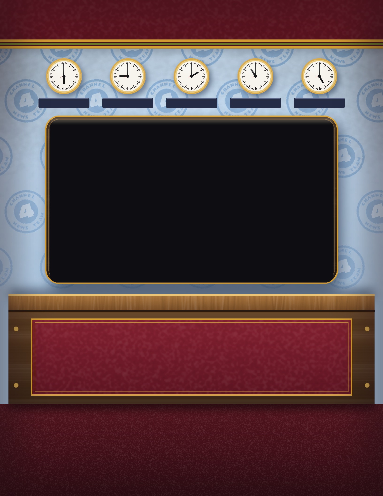
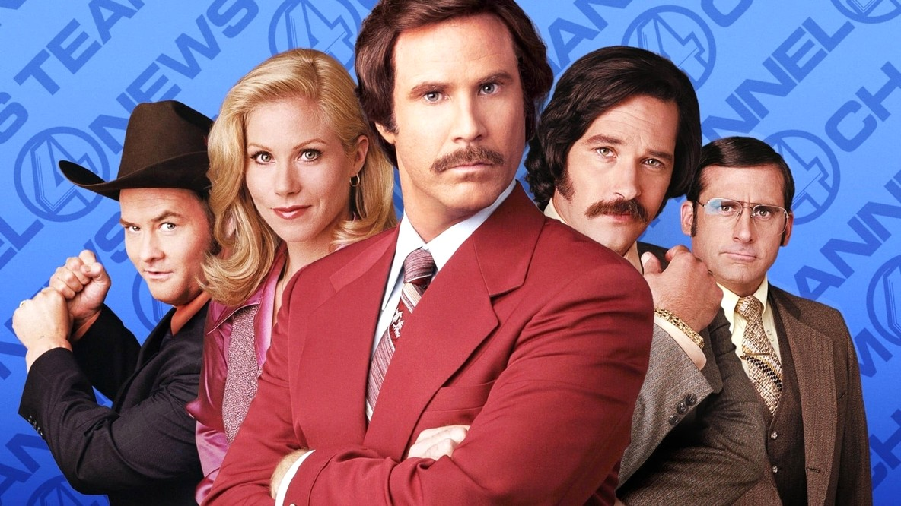

KVWN-TV Channel 4, San Diego
Friday, after the six o’clock

The Channel 4 News Team
Number one in San Diego. Again.
PROMPT 4
YOU STAY CLASSY, SAN DIEGO.
Scotch, supper and the whole Channel 4 family. The rundown is inside.
From the desk of Ron Burgundy
Tonight we eat like kings and drink like gentlemen. Wear your finest suit. I don’t want to brag, but I am kind of a big deal.
Ron Burgundy
Admit one
JAZZ
FLUTE
Ron Burgundy, late set.
He will play on.